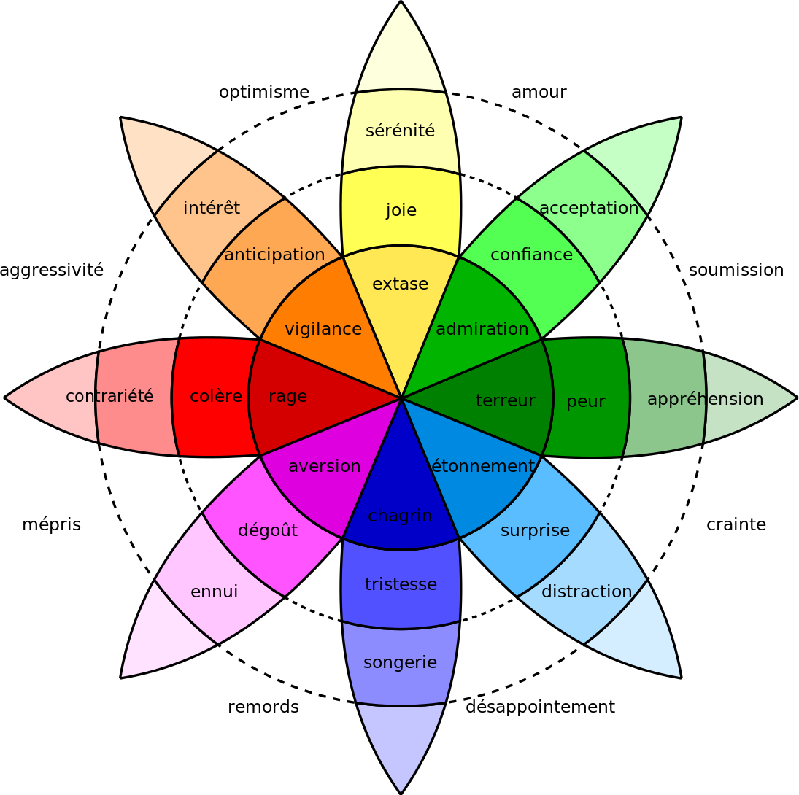

Qu’est-ce que l’Empathy Map ?
L’Empathy Map (ou carte d’empathie) est une méthode d’UX Design qui permet de représenter visuellement l’état d’esprit de son persona. Créé par Dave Gray, expert en stratégie d’innovation par le design et fondateur de Xplane, cet outil aide à mieux comprendre les besoins et les attentes du marché cible pour lequel vous vous engagez dans une démarche de conception.
Largement adoptée par les communautés Agile et Design Thinking, l’Empathy Map s’utilise dans différents contextes, aussi bien au stade de la conception produit que de la définition d’une nouvelle offre. Cet exercice sert à synthétiser les données collectées sur le terrain sous un angle émotionnel et apporte davantage de contexte aux personas.
L’atelier d’Empathy Map implique généralement des équipes pluridisciplinaires (produit, marketing, ventes, etc.) en leur offrant l’opportunité d’aligner leur vision sur la façon dont l’utilisateur pense et agit. L’équipe produit dispose ainsi de repères plus précis sur le persona, ce qui, par la suite, fluidifie l’ensemble des processus de conception et de développement.
Comment réaliser une Empathy Map ?
L’Empathy Map se présente sous la forme d’un canevas composé de six sections. Pour encourager les équipes produit à placer le persona au centre de l’atelier, le modèle original fait apparaître une tête au milieu du support, Dave Gray ayant d’ailleurs révélé qu’au départ, son équipe appelait l’exercice « The Big Head ».
Une fois votre persona positionné, découpez l’espace en plusieurs quadrants, chacun d’entre eux devant traiter un certain nombre de questions spécifiques.
Section 1 : Que dit et fait l’utilisateur ? (SAY & DO)
Dans cette section, il s’agit de répondre aux questions suivantes :
- Quelle est l’attitude de l’utilisateur vis-à-vis des autres ?
- Comment se comporte-t-il en public ?
- Que fait-il au quotidien ?
Cette fois, intéressez-vous à la vision dont dispose l’utilisateur :
Section 2 : Que voit l’utilisateur ? (SEE)
- Quels médias consulte-t-il ?
- Qui l’influence (amis, conjoint, collègues…)?
- Que regarde-t-il (livres, films…) ?
- À quelles offres du marché est-il exposé ?
Section 3 : Qu’entend l’utilisateur ? (HEAR)
Dans cette section, il convient de consigner les éléments de discours qui impactent l’utilisateur :
- Quels conseils lui donnent les personnes qui l’influencent ?
- Quelles mises en garde ou critiques entend-il ?
- Qu’entend-il de la part de la concurrence ?
Section 4 : Que pense et ressent l’utilisateur ? (THINK AND FEEL)
La réflexion doit se poursuivre sur le terrain de l’état émotionnel de l’utilisateur :
- Qu’est-ce qui compte vraiment pour lui ?
- Quelles pensées occupent son esprit ?
- Quelles sont ses aspirations ? Ses inquiétudes ?
Une fois ces quatre premiers quadrants remplis, l’exercice se termine avec deux grandes rubriques transverses à compléter. La section 5 concerne les frustrations (PAINS), autrement dit les points de douleur ou de friction rencontrés dans l’utilisation du produit ou service. La section 6 correspond quant à elle aux bénéfices (GAINS), lesquels sont en lien avec les motivations profondes de l’utilisateur.
Quelques points de vigilance pour réaliser une Empathy Map
La carte d’empathie est simple à réaliser mais demande d’éviter certains pièges. Tout d’abord, l’équipe doit se mettre dans la peau de l’utilisateur, en laissant de côté ses propres opinions et sentiments. Le fait de placer votre persona au centre peut être une bonne façon d’aider l’équipe à adopter cette posture, sachant qu’il faut toujours respecter l’équation « un persona = une carte d’empathie ».
Pour cette raison, les réponses données dans chaque section doivent reposer sur des éléments tangibles. Concrètement, utilisez des données qualitatives : des études scientifiques, des statistiques et surtout toute la matière issue de vos entretiens avec des utilisateurs. Pour coller au plus près à la réalité, privilégiez les réponses très factuelles, en reprenant par exemple les verbatims de vos interviews.
Comme l’Empathy Map demande de mobiliser ce qu’on appelle son « intelligence émotionnelle », il s’avère utile, si besoin, de s’appuyer sur les différents outils aidant à nommer précisément les émotions. À titre informatif, le psychologue et anthropologue Paul Ekman a identifié 6 émotions universelles dans les années 70 (tristesse, joie, colère, peur, dégoût et surprise) avant de compléter sa liste par 10 émotions supplémentaires dans les années 90 : amusement, satisfaction, gêne, excitation, culpabilité, fierté dans la réussite, soulagement, plaisir sensoriel, honte et mépris. Vous pouvez également utiliser la très célèbre roue des émotions de Robert Plutchick.
Roue des émotions de Robert Plutchik.
L’Empathy Map repose sur la collaboration : chacun exprime ses idées et celles-ci sont ensuite examinées collectivement. Lors de cette dernière étape, vous ne devez garder que les idées qui reviennent le plus souvent.
Pour finir, sachez qu’il est possible d’adapter l’Empathy Map aux besoins particuliers de votre équipe. Il existe d’ailleurs des versions différentes accessibles en ligne, dont une mise à jour proposée en 2017 par Dave Gray. Plus complète mais aussi plus complexe, elle intègre une nouvelle section « objectif » et place la section « Think and feel » directement à l’intérieur de la tête de l’utilisateur.
Nouvelle version de l’Empathy Map publiée en 2017 par David Gray.
Suggestions de ressources pour approfondir le sujet
- Un article dans lequel Dave Gray explique lui-même la méthode Empathy Map : Empathy Map.
- Un article dans lequel Dave Gray explique pourquoi il a mis à jour son canevas et comment l’utiliser : Updated Empathy Map Canvas.
- Une série de trois vidéos de Romain Rampa, docteur en management de l’innovation (concernant la méthode pour remplir le canevas dans sa version la plus aboutie : Empathy Map Canvas.